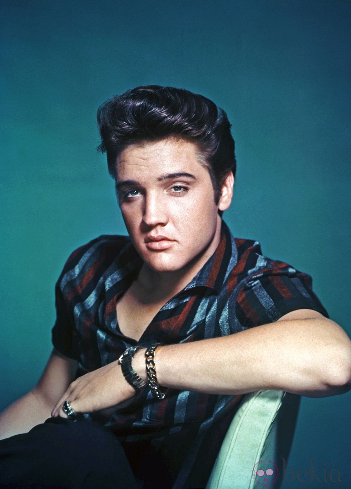

VIDA
Elvis Aaron Presleynota(Tupelo, Misisipi, 8 de enero de 1935-Memphis, Tennessee, 16 de agosto de 1977), más conocido como Elvis Presley o Elvis, fue un cantante y compositor estadounidense, considerado como uno de los iconos culturales más populares del siglo XX. Es apodado como el rey del rock and roll.Nació en Tupelo, Misisipi, pero cuando tenía trece años, se mudó junto a su familia a Memphis, en Tennessee, donde en 1954 comenzó su carrera artística cuando el dueño de Sun Records, Sam Phillips, vio en él la manera de expandir la música afroamericana. Acompañado por el guitarrista Scotty Moore y el contrabajista Bill Black, fue uno de los creadores del rockabilly, un estilo de tempo rápido impulsado por una constante ritmo que consiste en una fusión de música country y rhythm and blues. Tras llegar a un acuerdo con el empresario Tom Parker, su apoderado durante casi dos décadas, la compañía discográfica RCA Records consiguió un contrato para difundir su música. El primer sencillo con esta empresa, «Heartbreak Hotel», lanzado en enero de 1956, se convirtió en un éxito número uno. Pronto, tras sus apariciones en los medios, se convirtió en la figura principal del popular sonido del rock and roll, con una serie de presentaciones televisivas y éxitos que llegaron a la cima de las listas de ventas. Sus interpretaciones llenas de energía, sobre todo de canciones afroamericanas y su estilo desinhibido lo hicieron enormemente popular y controvertido. Meses después, en noviembre de ese mismo año, llevó a cabo su debut cinematográfico con la película Love Me Tender. Reclutado para el servicio militar en 1958, reanudó su carrera artística dos años más tarde, llegando parte de su material a alcanzar mayor éxito comercial desde entonces. Dio pocos conciertos, sin embargo, en la década de 1960, guiado por Parker, procedió a dedicarse a filmar películas para Hollywood y bandas sonoras, muchas de ellas ridiculizadas por la crítica. En 1968, tras siete años alejado de los escenarios, volvió a realizar actuaciones en directo en un especial de televisión que dio lugar a una amplia serie de conciertos en Las Vegas y también a varias giras musicales. En 1973 protagonizó el primer concierto teletransmitido, de ámbito mundial vía satélite, Aloha from Hawaii, visto aproximadamente por mil quinientos millones de personas. Finalmente, el consumo excesivo de medicamentos prescritos comprometió gravemente su salud, hasta que en 1977 murió súbitamente a la edad de cuarenta y dos años. Presley es considerado como una de las figuras más importantes de la cultura popular del siglo XX. American Idol se refirió a él como "el más grande ídolo mundial". Tenía una voz versátil y un inusual éxito en muchos géneros, entre ellos el country, el pop, las baladas, el gospel y el blues. Asimismo es solista con más ventas en la historia de la música popular.Nominado a 14 premios Grammy, ganó tres y recibió uno en la categoría a la carrera artística a la edad de treinta y seis años, además de figurar en diversos salones de la fama musicales.
CARRERA
Al inicio de su carrera, Elvis Aaron Presley Smith destacó como cantante en los servicios religiosos y en las reuniones musicales. Mas tarde en su adolescencia aprendió a tocar la guitarra y logró atraerse un grupo de seguidores en el circuito local de música country. Su estilo, que combinaba el country con influencias de música rhythm and blues y el nuevorock, triunfó en Memphis, Tennessee, y así comenzó una carrera llena de éxito. Sus baladas románticas rivalizaban con sus sugerentes movimientos en escena, características que le convirtieron en uno de los primeros ídolos de masas de la cultura adolescente de Estados Unidos. Entre sus canciones de mayor éxito se encuentran 'Love me Tender','All Shook Up Y 'A'Don't Be Cruel'. El 8 de enero de 1935 nació Elvis Aaron Presley y su gemelo (nació muerto) en Tupelo (Mississipi). La familia de Elvis era muy pobre. Elvis y creció feliz durante un tiempo hasta que se encuentra en la calle porque no podían pagar la renta del lugar donde viven. En 1940, se trasladan a Pascagoula (Mississipi). Años mas tarde Elvis recibe una guitarra que le da un gran gusto por la música. Una vez que ha conseguido rasgar las cuerdas con soltura y manejar los acordes más básicos, apenas Do, Fa y Sol, se presenta a un concurso organizado en Tristate por una casa de leches infantiles y canta “Old Shep” delante de un público sencillo que le aplaude a rabiar, aunque ni siquiera su madre pudo entrar con él para ayudarle. Vestido con un traje tradicional de cow-boy, rematado por un sombrero réplica del que llevaba el legendario héroe Hopalong Cassidy, logra que al menos su actuación no pase desapercibida. En esa actuación han quedado bien claras dos cosas: que Elvis tiene un gran oído musical y que su voz es algo distinta, alejada del sonido gangoso y nasal de la mayoría de los cantantes. Elvis canta con la garganta y eso se nota en las bien entonadas notas altas. Su asistencia cotidiana a la iglesia batista, en las cuales son habituales los coros que entonan música negra, ha empezado a dar su fruto. En1953, una vez terminados sus estudios consigue por fin realizar su sueño: Ser camionero para la Crown Electric Company y llevar nada menos que un Ford de gran tonelaje. Ya en esa época empieza a sentir la inclinación por la música y en sus ratos libres entona música country, la cual ejercita también sin reparos a través de la emisora de su vehículo. Aprende a tocar el piano y con su escaso sueldo compra toda clase de discos. Animado por sus progresos con la guitarra y después de participar en un concurso escolar, se presenta en la ciudad de Meridian - Mississipi - en donde organizan un concurso para jóvenes promesas de la canción. Consigue el segundo premio y con ese aval logra cantar en el club Eagle's Nest y acompañar con su guitarra a otros grupos más reconocidos de la región. Meses mas tarde el joven acude a una emisora de grabación, la Sun Records Company, y pide efectuar una grabación particular en un estudio decente. “Quiero grabar My Happiness, pero no quiero que se parezca a la que canta Bing Crosby. Deseo que se parezca a mí, que suene a Elvis Presley cantando”. La canción es escuchada por la Miss Radio Local, quien queda ciertamente impresionada por la voz del joven. Hace una copia de la grabación y se la envía a Sam Phillips, propietario de la casa Sun Records, la casa matriz de la Memphis Recording Service, con una nota que lo describe como un buen cantante de baladas, en la misma línea que los cantantes negros. Pero algo debió fallar en todo ello, ya que cuando quieren ponerse en contacto con Elvis nadie sabe su dirección, salvo que es un camionero que pasa de vez en cuando velozmente por allí; demasiado inconcreto para iniciar su búsqueda y demasiado trabajo para localizar a un joven como tantos otros. En1954 comienza el nacimiento de un ídolo que marcaría toda una época en la música moderna. Elvis graba un single. Por si fuera poco desalentador, las actuaciones en directo de Elvis no gustaban al público ya que se comportaba muy distinto a como era en los ensayos, con su fuerte sentido del humor y su agresividad contra todo lo establecido. En el escenario era torpe, miedoso y apenas se movía, lo que provocaba las iras del público y de su representante el Sr. Scotty pero no de las chicas, las cuales empezaban a chillar solamente con verle la cara.. Hasta que un día todo cambió. Esa tarde Elvis era diferente, agresivo y se movía con rapidez y decisión por el escenario. Provocaba sexualmente a las chicas, movía su pelvis con movimientos claramente provocadores y su voz ya no temblaba. ¿La causa de esa transformación?: alguien le había dado una pastilla de anfetaminas, la droga de moda que curaba la timidez y daba energías extras. Desde ese momento todo salió a pedir de boca. Se produjeron numerosas llamadas con nuevos contratos, había visitas, viajes y actuaciones en directo en las emisoras de radio. Con el dinero que empieza ya a ganar con rapidez, Elvis alquila por fin una casa decente. En 1955 grabó un segundo disco, “Sun” el cual le trajo muchísimo éxito. 1956, graba su película “Love Me Tender” la cual le trajo mucha mas fama de la que ya tenía y millones de dólares ambién saca su sencillo “Heartbreak Hotel” la cual constituyó un rotundo éxito, llegando a venderse en pocos días nada menos que un millón y medio de copias y ocupando el número uno en la lista. 1957, “Loving you”, estrenada el 9 de julio, nos cuenta la historia de un camionero que llega a la gran ciudad en busca de trabajo y allí encuentra a una guapa chica que le incorpora a un conjunto de música country que estaba buscando un cantante. El éxito volvió a romper muchos records. A partir de entonces la histeria con Elvis se convirtió en algo cotidiano y la mayoría de sus canciones ocuparon ya el número uno en todas las listas del país.